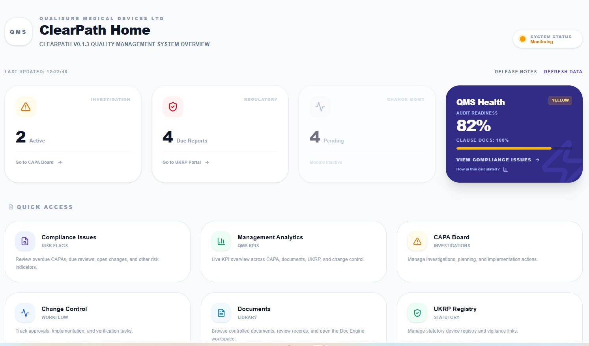
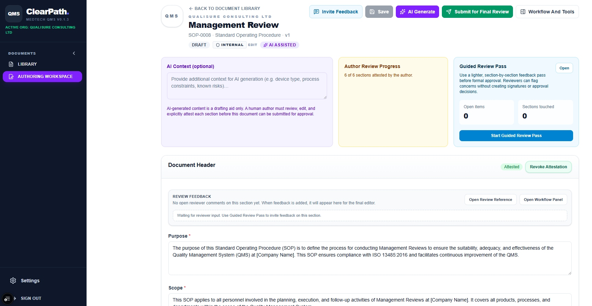
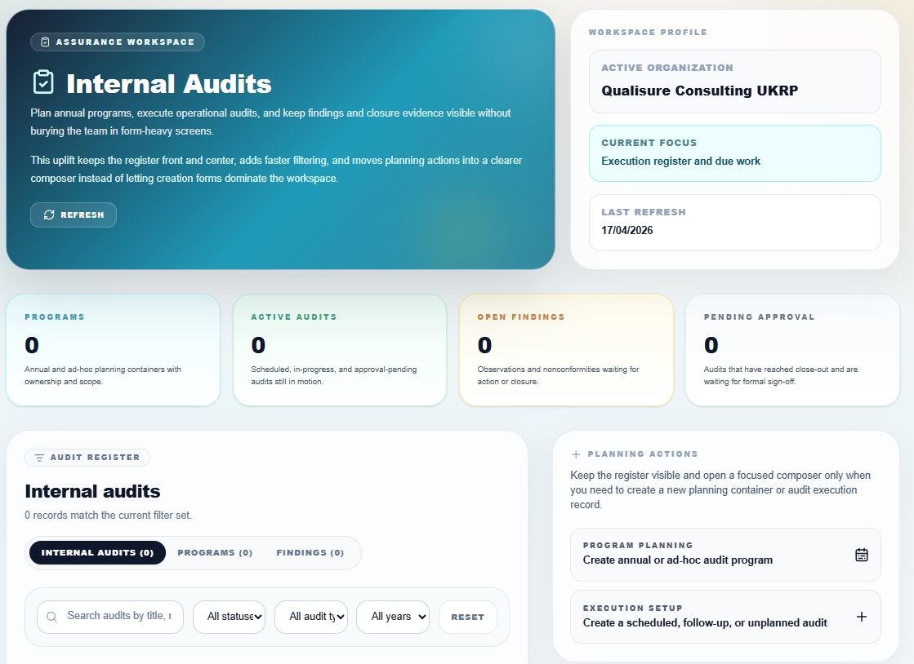
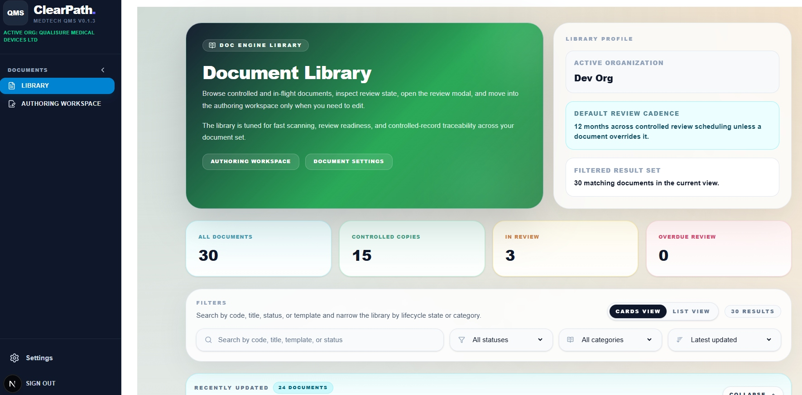
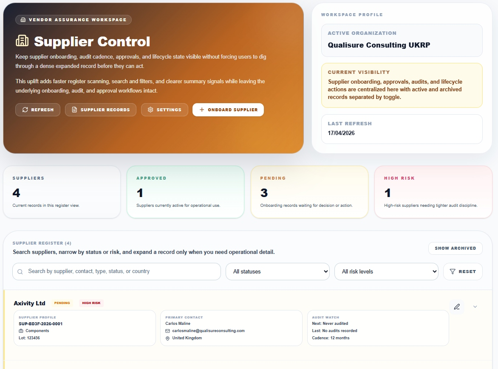

Your quality processes,
under control.
ClearPath brings document control, audits, supplier management and corrective actions into a single, easy-to-use platform — so your teams spend less time chasing paperwork and more time getting things right.

Everything your QMS needs.
Nothing it doesn't.
No quality background required. ClearPath is built for operational teams — not just quality specialists.
Document Control & Version History
Controlled copies, approval state, and review scheduling — all in one searchable library. No more shared drives.
AI-Assisted Document Authoring
Provide context about your process and ClearPath drafts a fully structured SOP — with purpose, scope and procedures already in place. Authors review and attest each section before submission.
Internal Audits & Findings Tracking
Plan annual audit programmes, execute operational audits, and keep findings and closure evidence visible — without burying the team in form-heavy screens.
CAPA — Corrective & Preventive Actions
Non-conformances and complaints become tracked CAPA records — assigned, prioritised, and followed to closure. AI-powered 5-Whys root cause analysis included.
Supplier Onboarding & Risk Control
Keep supplier onboarding, audit cadence, approvals, and lifecycle state visible — without forcing users to dig through dense records before they can act.
Live QMS Health Dashboard
Real-time KPIs across CAPA, documents, audits and compliance. Audit readiness score, overdue items, and quick access to every module from one screen.
Built for teams who need
clarity, not complexity.
Doc Control
Easy navigation of all your documents
Browse controlled and in-flight documents, inspect review state, open the review modal, and move into the authoring workspace only when you need to edit. Fast scanning, review readiness, and controlled-record traceability across your entire document set.
- 30 documents, 15 controlled copies tracked at a glance
- Filter by status, category or latest updated
- Cards view or list view — your preference
- 12-month default review cadence, per-document overrides

AI Authoring
Management Review Procedure — drafted in minutes
Open the AI authoring workspace, provide context about your process, and ClearPath generates a fully structured SOP. Authors review and attest each section individually before the document moves to formal approval.
- AI-generated content is a drafting aid — humans attest every section
- Author Review Progress tracks section completion
- Guided Review Pass for inline reviewer feedback
- Submit for Final Review with one click

Internal Audit
Execution register, findings and annual programmes
Plan annual and ad-hoc audit programmes, execute operational audits, and keep findings and closure evidence visible without burying the team in form-heavy screens. The register stays front and centre — planning actions open only when you need them.
- Audit programmes, active audits, open findings and pending approvals
- Execution register with search, status and type filters
- Create scheduled, follow-up or unplanned audits
- Observations and nonconformities tracked to closure

CAPA Manager
Active investigations, overdue tracking and corrective actions
When a non-conformance, complaint or audit finding is raised in ClearPath, it becomes a tracked CAPA record — assigned, prioritised, and followed to closure. Deadlines are visible and overdue CAPAs surface immediately on the management dashboard.
- Investigations linked to source events and affected documents
- AI-supported 5-Whys root cause analysis tool
- Overdue CAPAs surface on the dashboard automatically
- Every action is time-stamped and auditable

Supplier Control
Onboarding, risk classification, audit cadence
Keep supplier onboarding, audit cadence, approvals, and lifecycle state visible without forcing users to dig through dense records. Active and archived records are separated by toggle — register scanning is fast, record expansion is focused.
- Suppliers, Approved, Pending, High Risk tracked in real time
- Search by supplier, contact, type, status or country
- Audit Watch: next scheduled audit, last audit, cadence
- Onboard new suppliers with one action

From day one to audit-ready.
Create a document
Open the AI authoring workspace, provide context about your process, and ClearPath drafts a fully structured SOP. Your author reviews and attests each section before submission.
Review & approve
Reviewers receive a guided section-by-section pass, leaving inline comments without editing the draft. Once complete, the document moves to formal approval and is version-locked in the controlled library.
Stay on top of obligations
Documents are auto-scheduled for periodic review. Nothing falls off the radar. Overdue items surface in the management dashboard before they become a problem.
Designed to grow with you.
Three packages built for different stages of your quality journey — whether you're working toward ISO 9001, ISO 13485, ISO 14001, IATF 16949, or any other recognised standard. Contact us to discuss which fits your team best.
- Up to 5 users
- Core document control
- Basic audit module
- CAPA management
- Guided onboarding
Ideal for small teams beginning their quality management journey.
Get in touch- Up to 20 users
- Full QMS suite
- CAPA, Supplier & Audit modules
- Reporting & monitoring
- Priority support
Built for organisations scaling quality across multiple functions and standards.
Get in touch- Unlimited users
- Custom templates & workflows
- Dedicated onboarding
- Consultancy & training included
- SLA-backed support
Full consultancy-backed deployment with SLA guarantees and custom configuration.
Get in touchPrices are tailored to your organisation. Contact us for a no-obligation discussion and a live product demonstration.
Built by quality professionals.
Not a generic SaaS tool.
Deep regulatory and quality management expertise behind every design decision.
System architecture aligns with ISO 9001, ISO 13485, ISO 14001, IATF 16949, AS9100 and all major recognised QMS standards from the ground up.
Built and maintained by a dedicated team of professional software developers. ClearPath is actively developed, updated, and improved.
Multi-tenant architecture with full data isolation between organisations. Built GDPR-compliant from the ground up — your data stays yours.
Configured to your document categories, templates, workflows, and review cadence.
Qualisure Consulting Ltd, Faringdon, Oxfordshire — accessible, accountable, UK-based support.
Implementation, onboarding, training and ongoing consultancy are part of every package.
Cloud SaaS — no servers to manage. Scales seamlessly from a single site to full enterprise deployment.
Ready to see it live?
Request a 30-minute discovery call or live platform demo. No obligation — just a practical look at what ClearPath can do for your team.